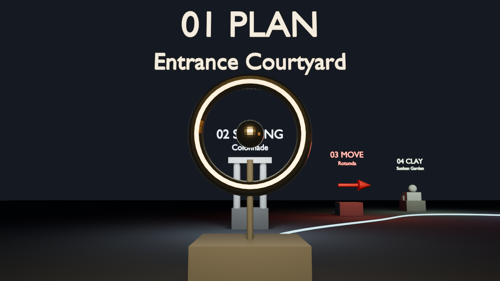
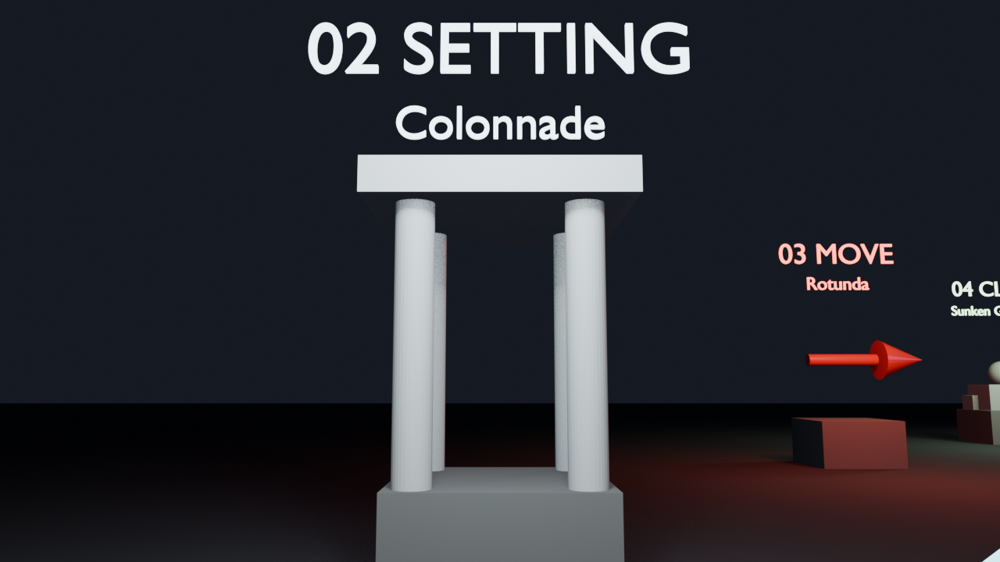
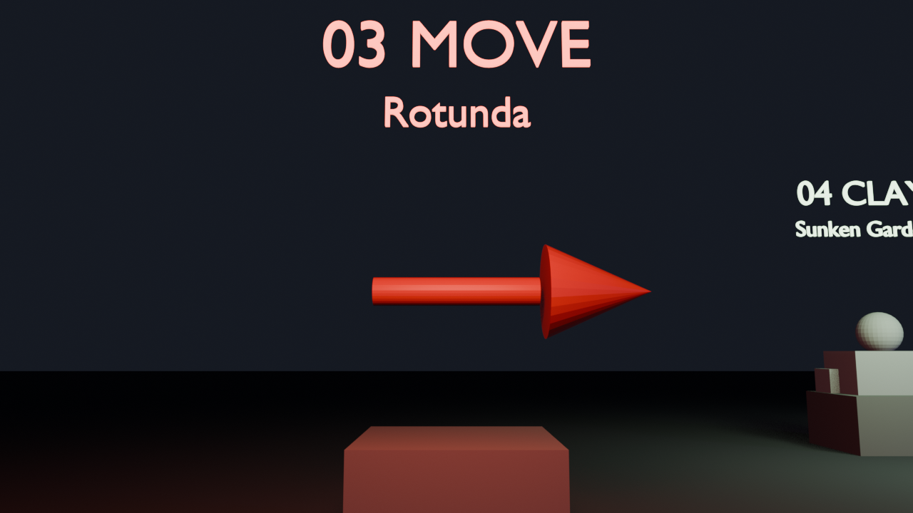
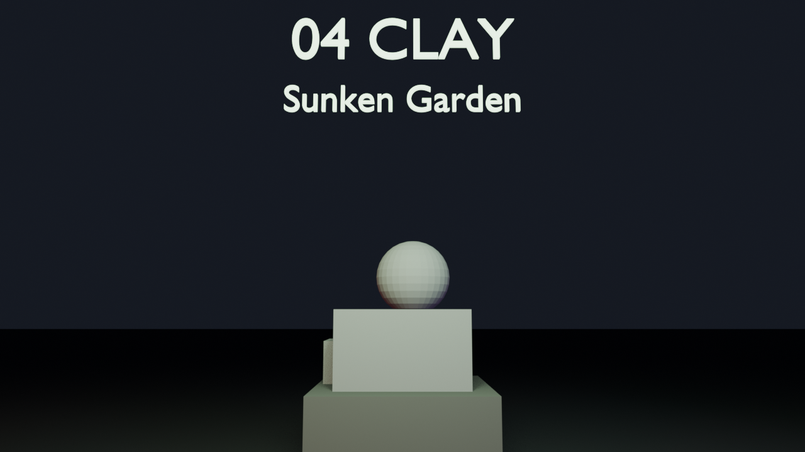
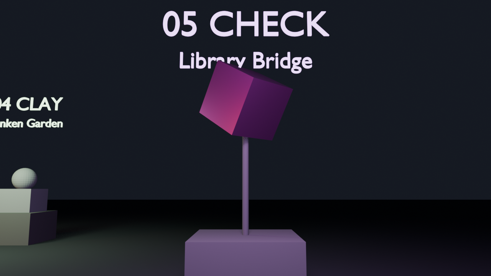
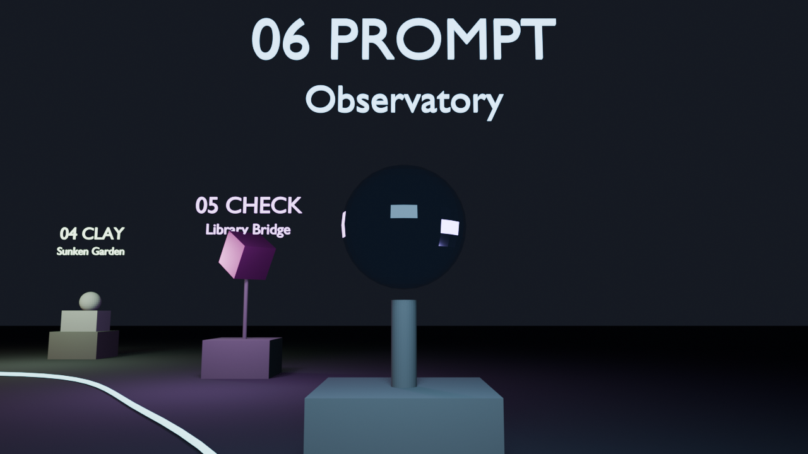
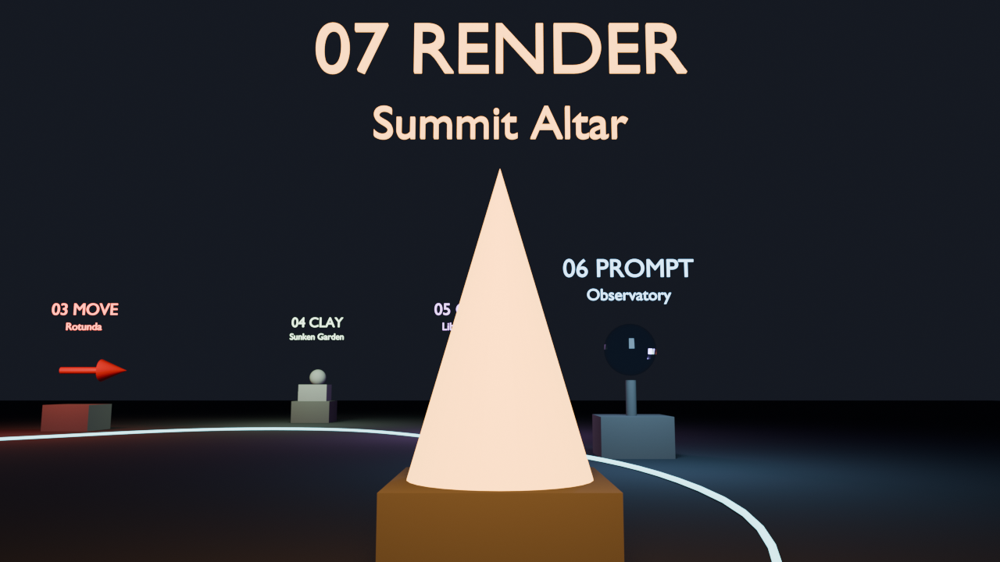

01 PLAN
Entrance Courtyard
Plan the shot: hero, setting, move, look.
A walkable 3D memory palace for 7 items, built procedurally in Blender 5.3 with a Python script. Each item sits at its own station on a stone promenade, with a sculpture, a coloured light and a number marker, so you can walk the route and recall the items in order (Method of Loci).


Plan the shot: hero, setting, move, look.

Build the set: 3 to 6 background shapes.

Pick one camera move.

Build in grey clay at real scale.

Check frames 1, 120 and 240.

Write the Flow prompt.

Save the .blend and render the clip.
Open the scene in Blender 5.3: blender memory-palace/memory_palace.blend. Scrub the timeline (frames 1 to 240) to play the walkthrough, which is keyed on Cam_Walkthrough.